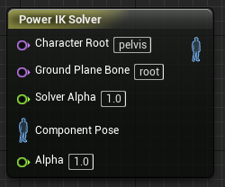

Solver Bones
The Power IK solver needs some information about each skeleton.

Note: Power IK does not support changing these bone names at run-time. They must be set prior to the first call to Solve().
Character Root
Set the Character Root to the top-most joint that is part of your character's body. This is usually not the actual top-node of the skeleton. This defaults to "pelvis" though some rigs call it "hips" or "body".
Any bones below the Character Root will potentially be affected by Power IK.
Any bones above the Character Root are completely ignored by Power IK and will pass through the solver unaffected.
Excluded Bones
This is an important feature for getting good results from Power IK.
In the Constraints section of the solver details panel you will find a list of Names called Excluded Bones. Use this list to specify those bones that should not bend or be considered as part of the IK solve.
Bones in this list will be completely ignored by Power IK. There is no additional cost for excluding bones.
Which Bones Are Solved
It is important to understand how Power IK determines which bones will be affected by the solver, as this will help you determine which bones ought to be excluded for best results.
When the solver is initialized, it walks UP the hierarchy (child to parent) from each effector until it reaches the Character Root bone. All of the bones along this path will be solved for. All the extra bones (ie those bones not in this direct lineage), are simply parented into the solved sub-skeleton.
There is no point excluding a Bone that is not a direct ancestor of an effector. Power IK takes care of these for you.
What Bones to Exclude
You should exclude Bones in the following circumstances:
- The bone is organizational. It acts as a grouping or a dummy transform for it's children, but does not have any anatomical purpose. Bones like this can often negatively impact the quality of the solved pose.
- The bone is for twisting deformation. So called "twist bones" are often inserted into a hiearchy for purposes of avoiding the candy-wrapper skinning artifact. Such bones are not meant to be bent and thus need to be excluded.
- The bone is coincident with another bone. If a child bone lies directly on top of it's parent, this can make it difficult for the solver to reconcile it's orientation. Exclude coincident bones to avoid this issue.